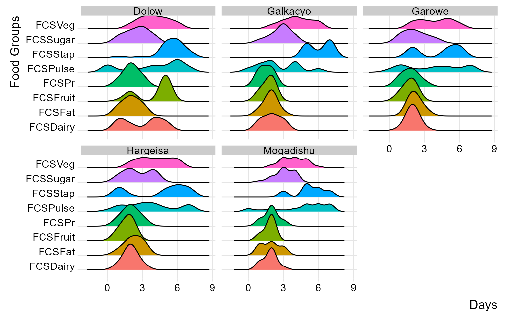

Cleaning Food Security Indicators
Source:vignettes/Cleaning_FSL_Indicators.Rmd
Cleaning_FSL_Indicators.RmdIn this article, we’ll explore how to clean food security and livelihood data using cleanR package. The data needs to be aligned with WFP Survey Designer to ensure that variable naming’s are consistent. First, we’ll upload the raw data which is the version downloaded from the MoDa server. Then we’ll use the calculate_fsl_indicators function to compute all the FSL indicators. Then once we have calculated all the indicators, we’ll inspect the quality of data and indicator scores and generate cleaning log file that will help us collect feedbacks and understand the underlying causes of possible issues flagged and at the same time capture the correct values for any inconsistencies or mistakes identified.
Step 1: Load packages & data
# required packages
library(tidyverse)
library(cleanR)
# load raw data
moda_data <- cleanR::survey_data %>% # converting HDDS variables to numeric
mutate(across(starts_with("HDDS"), as.numeric))Step 2: Format data
Now we have the raw data, and therefore we will compute indicators so we can proceed to run in-depth checks on the data and inspect if there is any inconsistency that need to be checked.
raw_data <- calculate_fsl_indicators(data = moda_data,
# FCS
FCSStap = "FCSStap",
FCSPulse = "FCSPulse",
FCSPr = "FCSPr",
FCSVeg = "FCSVeg",
FCSFruit = "FCSFruit",
FCSDairy = "FCSDairy",
FCSFat = "FCSFat",
FCSSugar = "FCSSugar",
cutoff = "Cat28",
# rCSI
rCSILessQlty = "rCSILessQlty",
rCSIBorrow = "rCSIBorrow",
rCSIMealSize = "rCSIMealSize",
rCSIMealAdult = "rCSIMealAdult",
rCSIMealNb = "rCSIMealNb",
# HHS
HHhSNoFood_FR = "HHhSNoFood_FR",
HHhSBedHung_FR = "HHhSBedHung_FR",
HHhSNotEat_FR = "HHhSNotEat_FR",
# HDDS
# HDDSStapCer = "HDDSStapCer",
# HDDSStapRoot = "HDDSStapRoot",
# HDDSVeg = "HDDSVeg",
# HDDSFruit = "HDDSFruit",
# HDDSPrMeat = "HDDSPrMeat",
# HDDSPrEgg = "HDDSPrEgg",
# HDDSPrFish = "HDDSPrFish",
# HDDSPulse = "HDDSPulse",
# HDDSDairy = "HDDSDairy",
# HDDSFat = "HDDSFat",
# HDDSSugar = "HDDSSugar",
# HDDSCond = "HDDSCond"
)Step 3: Use visualizations
(plot_ridge_distribution(raw_data, numeric_cols = c("FCSStap", "FCSPulse", "FCSPr", "FCSVeg", "FCSFruit", "FCSDairy", "FCSFat", "FCSSugar"),
name_groups = "Food Groups", name_units = "Days", grouping = "Area_Office"))